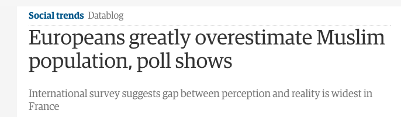

STARRED TOOLS
Connect to them
Do you understand "them" enough? We often go through life just accepting or tolerating "their" differences because we rarely have the courage, patience, or opportunity to ask them why those differences exist. Seek understanding instead, by asking "them" difficult questions and sharing your honest reflections.
See their world
The world that we see is sometimes filtered through the lens of our internet search engines. Each of us gets different results when we search for key terms, depending on our backgrounds, views, and history. See how "they" see the world by comparing your search results against theirs for any phrase.

Question your views
Are "your" views representative of society? Your views are often reinforced by the people in your social circle and the news that is fed to you online, so you may find it hard to understand why "they" see the world differently. Question your perception of the world by taking our surveys, and comparing your results against the reality of the facts and figures.
